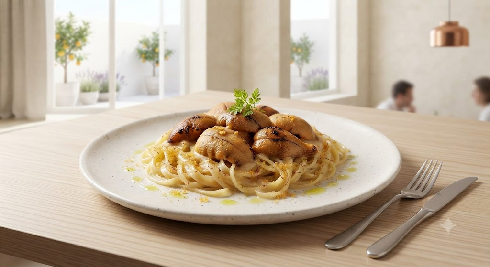
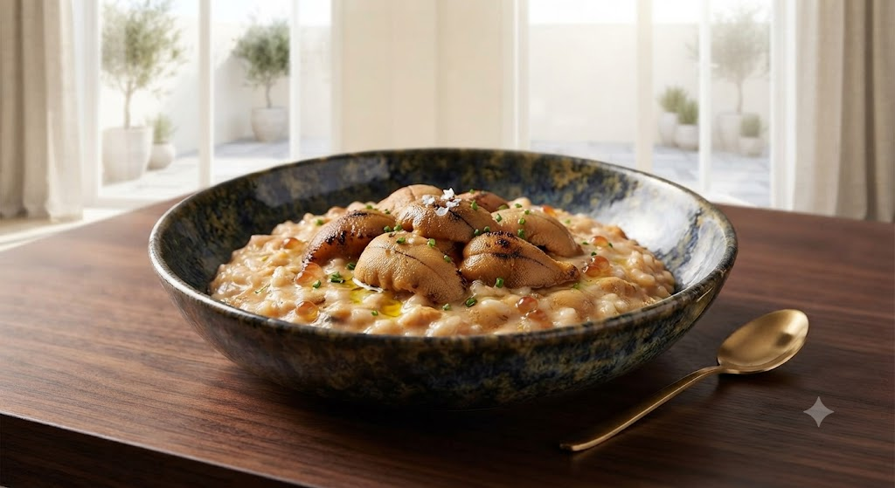
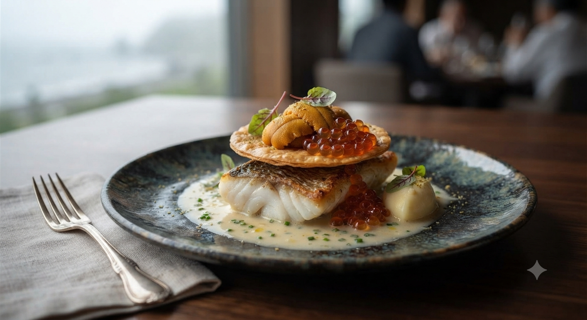

北海道の恵みを、一皿の芸術に。
SCROLL
北海道の恵みを、一皿の芸術に。
当ページよりお問い合わせ・LINE登録いただいた方限定で、
「誕生日プレート半額」などの特別優待をお送りします。

路面店でありながら、一歩足を踏み入れればそこは別世界。 1階の活気あるバール、2階の開放的な北欧風空間。 A5ランクの「びらとり和牛」や、濃厚な「燻り雲丹」が、 シェフ川崎律司の感性によって、驚きに満ちたイタリアンへと生まれ変わります。
「美味しいものに、境界線はない。」
Chef Ritsuji Kawasaki
SIGNATURE MENUS

新鮮な雲丹を惜しみなく使い、表面を軽く燻ることで香ばしさをプラス。 濃厚なクリームと雲丹の甘みが口の中で溶け合う、Bava不動の看板メニュー。
厳しい基準をクリアした「びらとり和牛」を、低温でじっくりとロースト。 赤身の旨味と雫落りの甘みが完璧なバランスで共存する、至極の一皿。
「お通しの自家製ピクルスを一口食べた瞬間に確信しました。
この店の料理は、間違いなく素晴らしいと。」
ご来店されたお客様の声
お客様のご要望にお応えし、さらに特別な体験をお届けします
「昼から贅沢にBavaの味を一人で堪能したい」という声にお応え。燻りウニリゾットやびらとり和牛をハーフサイズで楽しめる平日限定ランチを開始予定。
口コミでも大人気の「ローストビーフ×リンゴソース」や前菜盛り合わせをご自宅で。ワインと楽しむプレミアムテイクアウト・ギフトBOX。
オステリア バーヴァ(Osteria Bava)
〒064-0804 北海道札幌市中央区南4条西4丁目13−1
すすきの駅 徒歩2分
一軒家(1階:バールスペース / 2階:北欧風開放空間)
個室・ソファ席あり / プロジェクター完備 / 禁煙店
